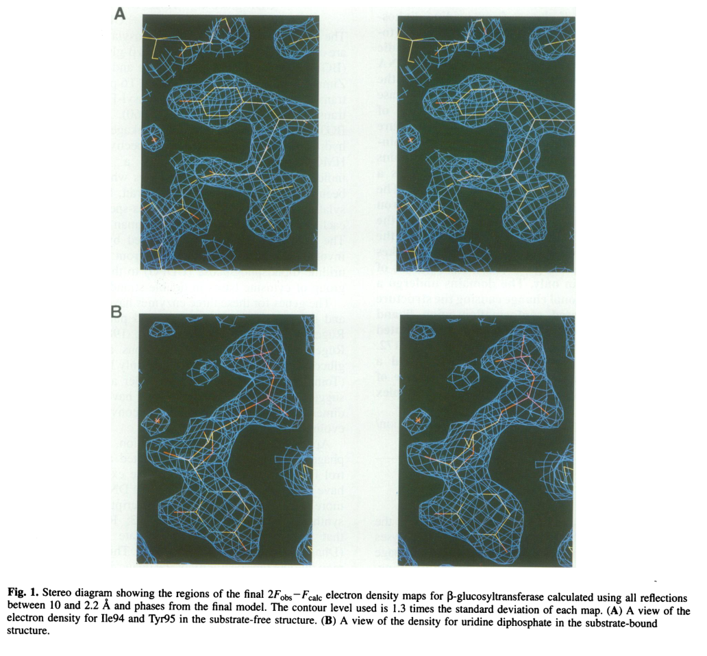

TODO: Add description for P04547
| GO Term | Evidence | Action | Reason |
|---|---|---|---|
|
GO:0016740
transferase activity
|
IEA
GO_REF:0000043 |
PENDING |
Summary: TODO: Review this GOA annotation
|
|
GO:0016757
glycosyltransferase activity
|
IEA
GO_REF:0000043 |
PENDING |
Summary: TODO: Review this GOA annotation
|
|
GO:0033821
DNA beta-glucosyltransferase activity
|
IEA
GO_REF:0000120 |
PENDING |
Summary: TODO: Review this GOA annotation
|
|
GO:0052031
symbiont-mediated perturbation of host defense response
|
IEA
GO_REF:0000043 |
PENDING |
Summary: TODO: Review this GOA annotation
|
|
GO:0052170
symbiont-mediated suppression of host innate immune response
|
IEA
GO_REF:0000043 |
PENDING |
Summary: TODO: Review this GOA annotation
|
|
GO:0099018
symbiont-mediated evasion of host restriction-modification system
|
IEA
GO_REF:0000120 |
PENDING |
Summary: TODO: Review this GOA annotation
|
|
GO:0006304
DNA modification
|
IEA
GO_REF:0000041 |
PENDING |
Summary: TODO: Review this GOA annotation
|
|
GO:0033821
DNA beta-glucosyltransferase activity
|
IDA
PMID:6078540 On the specificity of bacteriophage-induced hydroxymethylcyt... |
PENDING |
Summary: TODO: Review this GOA annotation
|
The research report should be a detailed narrative explaining the function, biological processes, and localization of the gene product. Citations should be given for all claims.
You should prioritize authoritative reviews and primary scientific literature when conducting research. You can supplement
this with annotations you find in gene/protein databases, but these can be outdated or inaccurate.
We are specifically interested in the primary function of the gene - for enzymes, what reaction is catalyzed, and what is the substrate specificity? For transporters, what is the substrate? For structural proteins or adapters, what is the broader structural role? For signaling molecules, what is the role in the pathway.
We are interested in where in or outside the cell the gene product carries out its function.
We are also interested in the signaling or biochemical pathways in which the gene functions. We are less interested in broad pleiotropic effects, except where these elucidate the precise role.
Include evidence where possible. We are interested in both experimental evidence as well as inference from structure, evolution, or bioinformatic analysis. Precise studies should be prioritized over high-throughput, where available.
The gene symbol bgt is used here specifically for Enterobacteria phage T4 and corresponds to DNA beta-glucosyltransferase (BGT; EC 2.4.1.27), which catalyzes glucosylation of hydroxymethylated cytosines in T4 DNA. This exactly matches the UniProt target identity (P04547; “DNA beta-glucosyltransferase; Beta-GT; EC 2.4.1.27”) as supported by primary structural and mechanistic studies on “T4 beta-glucosyltransferase”. (vrielinkl1994crystalstructureof pages 1-2, lariviere2003crystalstructuresof pages 1-3)
A hallmark of T-even phages such as T4 is replacement of genomic cytosine with 5-hydroxymethylcytosine (5hmC; historically HMC) during DNA replication, followed by post-replicative glycosylation to yield glucosyl-5-hydroxymethylcytosine (ghmC). This is part of a broader “phage DNA protection” strategy that reduces susceptibility to host nucleases and restriction enzymes. (vrielinkl1994crystalstructureof pages 1-2, thomas2018theodd“rb” pages 1-3)
BGT (bgt; UniProt P04547) is a DNA-modifying glycosyltransferase that transfers glucose from UDP-glucose onto 5hmC residues in double-stranded DNA, producing β-glucosyl-5hmC in the phage genome. (lariviere2003crystalstructuresof pages 1-3, vrielinkl1994crystalstructureof pages 1-2)
The core enzymatic reaction is:
UDP-glucose + 5hmC-DNA → UDP + β-glucosyl-5hmC-DNA
This is explicitly described as transfer of glucose from UDP-glucose to 5-hydroxymethylcytosine in duplex T4 DNA by T4 β-glucosyltransferase (BGT), yielding β-glucosylated 5hmC. (lariviere2003crystalstructuresof pages 1-3, vrielinkl1994crystalstructureof pages 1-2)
BGT targets hydroxymethylated cytosines (5hmC/HMC) in DNA rather than unmodified cytosine; the biological context is that T4 first incorporates 5hmC during replication and then glucosylates it. (thomas2018theodd“rb” pages 1-3, vrielinkl1994crystalstructureof pages 1-2)
T4 encodes two glucosyltransferases, producing α- and β-glucosylated 5hmC (α- and β-g-hmC). A useful operational model is:
- α-GT acts “immediately after replication” (inferred in that study to be linked to replication machinery), but cannot efficiently modify some neighboring 5hmC sites.
- β-GT (BGT/bgt) then modifies remaining sites, completing glucosylation at positions α-GT fails to access or modify. (thomas2018theodd“rb” pages 1-3)
BGT adopts a GT-B fold with two domains separated by a central cleft. Key structural conclusions include:
- UDP-glucose donor binding is largely associated with the C-terminal domain.
- Acceptor (DNA/5hmC) binding is predominantly associated with the N-terminal domain.
- A hinge-like region around residues 166–172 supports domain motion upon ligand binding. (lariviere2003crystalstructuresof pages 1-3, vrielinkl1994crystalstructureof pages 1-2)
Visual evidence from the 1994 EMBO Journal structure includes electron density for bound UDP (portion of UDPG) and ribbon/topological representations of the two-domain architecture and the UDP-binding cleft. (vrielinkl1994crystalstructureof media aa897d23, vrielinkl1994crystalstructureof media e64460a9, vrielinkl1994crystalstructureof media 2795b4a7)
BGT is described as an inverting glycosyltransferase. Structural work with UDP-glucose complexes supports an in-line (direct-displacement) mechanism with an oxocarbenium-ion-like transition state and a catalytic base that activates the acceptor hydroxyl for nucleophilic attack. (lariviere2003crystalstructuresof pages 1-3)
A key mechanistic finding is that Asp100 functions as the catalytic base: the D100A variant shows altered behavior consistent with loss of the base required for efficient catalysis and was used to identify Asp100’s role. (lariviere2003crystalstructuresof pages 1-3)
Electrostatic analysis of the enzyme surface indicates a large positive potential along a concave surface, interpreted as consistent with DNA binding. (vrielinkl1994crystalstructureof pages 1-2)
BGT acts post-replicatively to glucosylate 5hmC residues in T4 DNA, converting HMC-DNA to glucose-HMC DNA as part of the DNA modification program of T-even phages. (vrielinkl1994crystalstructureof pages 1-2, thomas2018theodd“rb” pages 1-3)
Glucosylation of 5hmC is described as part of a phage DNA protection system, helping prevent cleavage by host nucleases and restriction endonucleases; it may also influence late gene expression. (vrielinkl1994crystalstructureof pages 1-2)
Recent work on host defenses provides modern mechanistic context for why this modification matters: in a systematic survey of nuclease-containing anti-phage systems, authors describe that T4 incorporates 5-hydroxymethyl dCTP and then glycosylates hmC to glucosyl-5hmC (ghmC); ghmC can abolish or reduce the activity of multiple bacterial defense systems. (thomas2018theodd“rb” pages 1-3)
Bacterial defense systems can specifically recognize and target glucosylated 5hmC phage DNA. For example, a Vibrio cholerae Type IV restriction system (TgvAB) was shown to defend against T-even phages by targeting glucosylated 5hmC, and T4 mutants lacking glucosylation genes (including bgt) can become resistant to that specific defense while potentially becoming susceptible to other systems—illustrating evolutionary tradeoffs. (pyle2024virusencodedglycosyltransferaseshypermodify pages 55-57)
Direct experimental “subcellular localization” measurements for BGT were not retrieved in the current evidence set. However, multiple sources indicate timing and functional localization:
- The modification is post-replicative, placing activity in the infected cell compartment where T4 DNA replication and maturation occur (intracellular/cytosolic context). (vrielinkl1994crystalstructureof pages 1-2)
- β-GT acts after replication and after initial α-GT action to complete glucosylation of sites not modified by α-GT. (thomas2018theodd“rb” pages 1-3)
A frequently cited quantitative statistic is that in T4 genomic DNA:
- ~70% of 5hmC residues are α-glucosylated, and
- ~30% are β-glucosylated (β fraction attributable to β-GT/BGT). (thomas2018theodd“rb” pages 1-3)
Although the retrieved structural/mechanistic papers clearly identify the reaction, mechanism class (inverting), and a catalytic base (Asp100), the currently retrieved evidence excerpts did not include explicit kinetic constants (Km, kcat) or sequence-context preferences on DNA. Consequently, this report does not provide verified kinetic parameters.
A 2023 Journal of Virology study used an E. coli genome survey to catalog nuclease-containing anti-phage systems and experimentally tested which restrict T4. The authors explicitly frame hmC and ghmC as counter-defense modifications and show ghmC can abolish activities of multiple defense systems, emphasizing the modern relevance of T4’s glucosylation pathway (to which BGT contributes). Publication date: 2023-06; URL: https://doi.org/10.1128/jvi.00599-23 (thomas2018theodd“rb” pages 1-3)
A 2024 Journal of Bacteriology study identifies a V. cholerae Type IV restriction system (TgvAB) that targets glucosylated 5hmC in T-even phage genomes, and notes that T4 mutants deleted for bgt (and agt) lose glucosylation and can escape that defense with tradeoffs. Publication date: 2024-09; URL: https://doi.org/10.1128/jb.00143-24 (pyle2024virusencodedglycosyltransferaseshypermodify pages 55-57)
A 2024 bioRxiv preprint argues virus-encoded glycosyltransferases can hypermodify DNA with diverse glycans and includes assays involving T4 βGT as a canonical enzyme for converting 5hmC substrates to glucosylated products, situating BGT as a reference point for expanding diversity of DNA glycosylations. Publication date (preprint): 2024-12; URL: https://doi.org/10.1101/2023.12.21.572611 (pyle2024virusencodedglycosyltransferaseshypermodify pages 55-57)
T4 βGT has become a standard enzymatic reagent for glucosylating 5hmC in DNA to enable selective detection/protection of 5hmC during downstream steps (e.g., enzymatic conversion or deamination-based approaches). This is highlighted in a 2024 review of cfDNA hydroxymethylation detection methods, which describes T4 βGT-mediated glucosylation as a core step in some assays (e.g., protecting 5hmC). Publication date: 2024-09; URL: https://doi.org/10.3390/genes15091160 (pyle2024virusencodedglycosyltransferaseshypermodify pages 55-57)
A 2023 Nature Biotechnology paper describing a method for simultaneously sequencing genetic and epigenetic bases includes a glycosylation step explicitly using T4 beta-glucosyltransferase as part of its conversion workflow. Publication date: 2023-02; URL: https://doi.org/10.1038/s41587-022-01652-0 (pyle2024virusencodedglycosyltransferaseshypermodify pages 55-57)
These uses are direct “real-world implementations” because T4 βGT is not merely a historical enzyme—it is routinely deployed in contemporary molecular biology kits and pipelines for mapping or differentiating modified cytosines (especially 5hmC) at scale. (pyle2024virusencodedglycosyltransferaseshypermodify pages 55-57)
The structural enzymology literature on BGT is widely cited and interprets the enzyme as a GT-B fold glycosyltransferase with donor and acceptor binding segregated by domain, and it attributes catalysis to a direct displacement mechanism requiring a general base (Asp100). These conclusions provide a mechanistically grounded annotation (not merely homology-based). (lariviere2003crystalstructuresof pages 1-3, vrielinkl1994crystalstructureof pages 1-2)
Recent host–phage defense studies interpret ghmC (to which BGT contributes) as a key counter-defense modification that can inactivate multiple bacterial nucleases/defense systems; conversely, bacteria have evolved systems that specifically recognize glucosylated 5hmC, reinforcing the centrality of the BGT-mediated modification in the evolutionary arms race. (thomas2018theodd“rb” pages 1-3, pyle2024virusencodedglycosyltransferaseshypermodify pages 55-57)
| Aspect | Functional-annotation fact | Evidence |
|---|---|---|
| Verified identity | bgt in Enterobacteria phage T4 encodes DNA beta-glucosyltransferase (BGT; EC 2.4.1.27), the enzyme responsible for the beta glucosylation branch of T4 DNA hydroxymethylcytosine modification. | (vrielinkl1994crystalstructureof pages 1-2, thomas2018theodd“rb” pages 1-3) |
| Reaction | Transfers glucose from UDP-glucose to 5-hydroxymethylcytosine (5hmC/HMC) in duplex T4 DNA, yielding β-glucosyl-5-hydroxymethylcytosine in DNA plus UDP. | (lariviere2003crystalstructuresof pages 1-3, vrielinkl1994crystalstructureof pages 1-2) |
| Donor substrate | UDP-glucose (uridine diphosphoglucose; host-supplied). | (vrielinkl1994crystalstructureof pages 1-2, thomas2018theodd“rb” pages 1-3) |
| Acceptor substrate | 5hmC-containing duplex DNA; acceptor binding is primarily associated with the N-terminal domain of BGT. | (lariviere2003crystalstructuresof pages 1-3) |
| Product | β-glucosylated 5hmC residues in phage DNA; in T4 this contributes to the glucosylated-hmC genome state. | (lariviere2003crystalstructuresof pages 1-3, thomas2018theodd“rb” pages 1-3) |
| Catalytic mechanism | Inverting glycosyltransferase using a direct in-line displacement mechanism with oxocarbenium-ion-like transition-state character. | (lariviere2003crystalstructuresof pages 1-3) |
| Catalytic residue | Asp100 is identified as the catalytic base; the D100A mutant blocks normal catalytic behavior and was key to mechanistic assignment. | (lariviere2003crystalstructuresof pages 1-3) |
| Structural fold / domains | BGT adopts the GT-B fold with two domains separated by a central cleft; donor nucleotide-sugar binds mainly the C-terminal domain, and a hinge around residues 166-172 supports domain movement. | (lariviere2003crystalstructuresof pages 1-3, vrielinkl1994crystalstructureof pages 1-2, vrielinkl1994crystalstructureof media e64460a9, vrielinkl1994crystalstructureof media 2795b4a7) |
| DNA-binding features | The enzyme surface includes a positively charged concave region consistent with binding DNA substrate. | (vrielinkl1994crystalstructureof pages 1-2) |
| Biological role in T4 | Performs post-replicative glucosylation of T4 hydroxymethylcytosine-containing DNA as part of the phage DNA protection system. | (vrielinkl1994crystalstructureof pages 1-2, thomas2018theodd“rb” pages 1-3) |
| Anti-restriction role | Glucosylated hmC (ghmC) helps protect T4 DNA from many host nucleases/restriction systems; recent work shows ghmC can abolish or reduce several E. coli antiphage nuclease defenses. | (thomas2018theodd“rb” pages 1-3, mejiapitta2026a5hydroxymethylcytosinedna pages 18-21) |
| Pathway context | Upstream, T4 first replaces cytosine with 5hmC during DNA synthesis; BGT then modifies a subset of those residues after replication. | (thomas2018theodd“rb” pages 1-3) |
| Modification fractions in T4 DNA | In wild-type T4 DNA, approximately 70% of hmC residues are α-glucosylated and ~30% are β-glucosylated. | (thomas2018theodd“rb” pages 1-3) |
| Distinction from α-GT | α-GT acts immediately after replication but cannot modify neighboring hmC residues efficiently; BGT completes modification of sites left unmodified by α-GT. | (thomas2018theodd“rb” pages 1-3) |
| Modern application: epigenetics workflows | T4 βGT is widely repurposed to glucosylate/protect 5hmC in enzymatic sequencing and hydroxymethylation-mapping workflows, enabling selective readout of cytosine modifications. | (pyle2024virusencodedglycosyltransferaseshypermodify pages 55-57) |
| Modern application: cfDNA/5hmC detection | Reviews of 5hmC detection methods describe T4-βGT-mediated glucosylation as a core step for protecting or labeling 5hmC in cancer cfDNA and related assays. | (pyle2024virusencodedglycosyltransferaseshypermodify pages 55-57) |
Table: This table summarizes the core functional-annotation points for Enterobacteria phage T4 DNA beta-glucosyltransferase (bgt/P04547), including reaction chemistry, mechanism, structural features, biological role, and modern assay applications. It is useful as a compact evidence-backed reference for annotation and report writing.
bgt (UniProt P04547) encodes a DNA beta-glucosyltransferase (EC 2.4.1.27) that catalyzes UDP-glucose-dependent transfer of glucose to 5-hydroxymethylcytosine residues in duplex phage DNA, producing β-glucosyl-5hmC. The enzyme adopts a GT-B fold; donor binding is primarily C-terminal, acceptor binding primarily N-terminal; catalysis proceeds by an inverting direct-displacement mechanism using Asp100 as catalytic base. In the T4 lifecycle, BGT acts post-replicatively to complete glucosylation of 5hmC residues not modified by α-glucosyltransferase, contributing to protection of phage DNA from host restriction/nucleases and influencing infection success in the face of modern bacterial defense systems. (lariviere2003crystalstructuresof pages 1-3, vrielinkl1994crystalstructureof pages 1-2, thomas2018theodd“rb” pages 1-3)
References
(vrielinkl1994crystalstructureof pages 1-2): Alice Vrielinkl, W. Ruger, H. P. C. Driessen, and P. Freemont. Crystal structure of the dna modifying enzyme beta‐glucosyltransferase in the presence and absence of the substrate uridine diphosphoglucose. The EMBO Journal, 13:3413-3422, Aug 1994. URL: https://doi.org/10.1002/j.1460-2075.1994.tb06646.x, doi:10.1002/j.1460-2075.1994.tb06646.x. This article has 356 citations.
(lariviere2003crystalstructuresof pages 1-3): Laurent Larivière, Virginie Gueguen-Chaignon, and Solange Moréra. Crystal structures of the t4 phage β-glucosyltransferase and the d100a mutant in complex with udp-glucose: glucose binding and identification of the catalytic base for a direct displacement mechanism. Jul 2003. URL: https://doi.org/10.1016/s0022-2836(03)00635-1, doi:10.1016/s0022-2836(03)00635-1. This article has 85 citations and is from a domain leading peer-reviewed journal.
(pyle2024virusencodedglycosyltransferaseshypermodify pages 55-57): Jesse D. Pyle, Sean R. Lund, Katherine H. O’Toole, and Lana Saleh. Virus-encoded glycosyltransferases hypermodify dna with diverse glycans. bioRxiv, Dec 2024. URL: https://doi.org/10.1101/2023.12.21.572611, doi:10.1101/2023.12.21.572611. This article has 12 citations.
(thomas2018theodd“rb” pages 1-3): Julie A. Thomas, Jared Orwenyo, Lai-Xi Wang, and Lindsay W. Black. The odd “rb” phage—identification of arabinosylation as a new epigenetic modification of dna in t4-like phage rb69. Viruses, 10:313, Jun 2018. URL: https://doi.org/10.3390/v10060313, doi:10.3390/v10060313. This article has 43 citations.
(vrielinkl1994crystalstructureof media aa897d23): Alice Vrielinkl, W. Ruger, H. P. C. Driessen, and P. Freemont. Crystal structure of the dna modifying enzyme beta‐glucosyltransferase in the presence and absence of the substrate uridine diphosphoglucose. The EMBO Journal, 13:3413-3422, Aug 1994. URL: https://doi.org/10.1002/j.1460-2075.1994.tb06646.x, doi:10.1002/j.1460-2075.1994.tb06646.x. This article has 356 citations.
(vrielinkl1994crystalstructureof media e64460a9): Alice Vrielinkl, W. Ruger, H. P. C. Driessen, and P. Freemont. Crystal structure of the dna modifying enzyme beta‐glucosyltransferase in the presence and absence of the substrate uridine diphosphoglucose. The EMBO Journal, 13:3413-3422, Aug 1994. URL: https://doi.org/10.1002/j.1460-2075.1994.tb06646.x, doi:10.1002/j.1460-2075.1994.tb06646.x. This article has 356 citations.
(vrielinkl1994crystalstructureof media 2795b4a7): Alice Vrielinkl, W. Ruger, H. P. C. Driessen, and P. Freemont. Crystal structure of the dna modifying enzyme beta‐glucosyltransferase in the presence and absence of the substrate uridine diphosphoglucose. The EMBO Journal, 13:3413-3422, Aug 1994. URL: https://doi.org/10.1002/j.1460-2075.1994.tb06646.x, doi:10.1002/j.1460-2075.1994.tb06646.x. This article has 356 citations.
(mejiapitta2026a5hydroxymethylcytosinedna pages 18-21): Adriana Mejía-Pitta, Zhiying Zhang, Amer A. Hossain, Karolina Bartosik, Christian F. Baca, Christopher Peralta, Henrik Molina, Marianna Teplova, Sean F. Brady, Ronald Micura, Dinshaw J. Patel, and Luciano A. Marraffini. A 5-hydroxymethylcytosine dna glycosylase provides defense against t-even bacteriophages. bioRxiv, Feb 2026. URL: https://doi.org/10.64898/2026.02.25.707755, doi:10.64898/2026.02.25.707755. This article has 0 citations.

id: P04547
gene_symbol: P04547
product_type: PROTEIN
status: INITIALIZED
taxon:
id: NCBITaxon:10665
label: Enterobacteria phage T4
description: 'TODO: Add description for P04547'
existing_annotations:
- term:
id: GO:0016740
label: transferase activity
evidence_type: IEA
original_reference_id: GO_REF:0000043
review:
summary: 'TODO: Review this GOA annotation'
action: PENDING
- term:
id: GO:0016757
label: glycosyltransferase activity
evidence_type: IEA
original_reference_id: GO_REF:0000043
review:
summary: 'TODO: Review this GOA annotation'
action: PENDING
- term:
id: GO:0033821
label: DNA beta-glucosyltransferase activity
evidence_type: IEA
original_reference_id: GO_REF:0000120
review:
summary: 'TODO: Review this GOA annotation'
action: PENDING
- term:
id: GO:0052031
label: symbiont-mediated perturbation of host defense response
evidence_type: IEA
original_reference_id: GO_REF:0000043
review:
summary: 'TODO: Review this GOA annotation'
action: PENDING
- term:
id: GO:0052170
label: symbiont-mediated suppression of host innate immune response
evidence_type: IEA
original_reference_id: GO_REF:0000043
review:
summary: 'TODO: Review this GOA annotation'
action: PENDING
- term:
id: GO:0099018
label: symbiont-mediated evasion of host restriction-modification system
evidence_type: IEA
original_reference_id: GO_REF:0000120
review:
summary: 'TODO: Review this GOA annotation'
action: PENDING
- term:
id: GO:0006304
label: DNA modification
evidence_type: IEA
original_reference_id: GO_REF:0000041
review:
summary: 'TODO: Review this GOA annotation'
action: PENDING
- term:
id: GO:0033821
label: DNA beta-glucosyltransferase activity
evidence_type: IDA
original_reference_id: PMID:6078540
review:
summary: 'TODO: Review this GOA annotation'
action: PENDING
references:
- id: GO_REF:0000041
title: Gene Ontology annotation based on UniPathway vocabulary mapping
findings: []
- id: GO_REF:0000043
title: Gene Ontology annotation based on UniProtKB/Swiss-Prot keyword mapping
findings: []
- id: GO_REF:0000120
title: Combined Automated Annotation using Multiple IEA Methods
findings: []
- id: PMID:6078540
title: On the specificity of bacteriophage-induced hydroxymethylcytosine glucosyltransferases.
II. Specificities of hydroxymethylcytosine alphaand beta-glucosyltransferases
induced by bacteriophage T4.
findings: []
{kind=link}